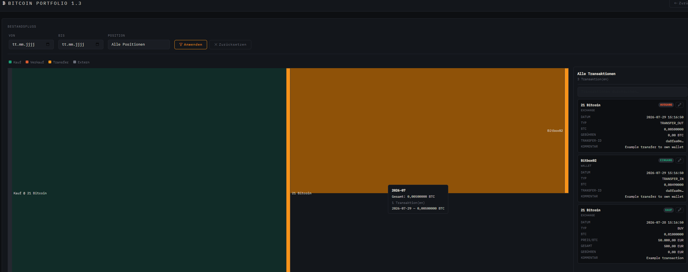
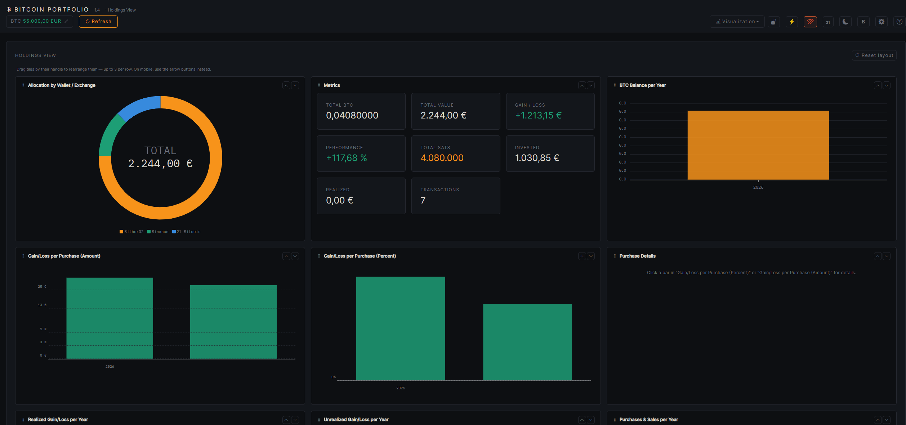
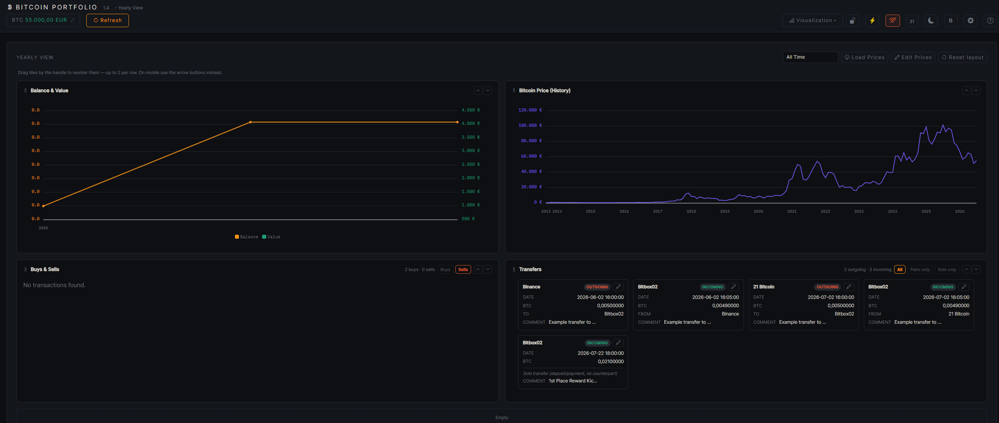

Diagramma di flusso (Sankey)
Accessibile dall'intestazione del pannello tramite «Visualizzazione» → «Diagramma di flusso» (o direttamente su /btc-tracking/flow). Disegna un diagramma di Sankey di come si sono mossi i tuoi BTC nel tempo: gli acquisti entrano da sinistra, le vendite e i prelievi esterni escono a destra, e i trasferimenti tra i tuoi portafogli/ exchange appaiono come connessioni tra i nodi di posizione. Le operazioni sono raggruppate per mese e per coppia origine/ destinazione affinché il diagramma resti leggibile anche con una cronologia lunga.
Filtri
| Filtro | Effetto |
|---|---|
| Da / A | Limita il diagramma a un periodo |
| Posizione | Ancora il diagramma a un portafoglio/exchange — segue i suoi BTC all'indietro (origine) e in avanti (destinazione) |
Legenda dei colori
- Acquisto — BTC acquistati verso una posizione
- Vendita — BTC venduti da una posizione
- Trasferimento — spostato tra due posizioni proprie
- Esterno — deposito da, o prelievo verso, un indirizzo al di fuori delle posizioni tracciate
Pannello delle transazioni
Accanto al diagramma, un pannello mostra ogni operazione sottostante come scheda (data, posizione, tipo, quantità BTC, prezzo, commissioni, valuta, tasso di cambio, ID trasferimento, commento). Acquisto, vendita e trasferimento in entrata/uscita ricevono ciascuno un piccolo badge colorato. Un campo di ricerca sopra l'elenco filtra per qualsiasi valore visibile sulle schede (posizione, tipo, data, importi, commento, …) — indipendentemente dal fatto che gli importi siano inseriti con punto o virgola. Su schermi più stretti, il pannello scivola sotto il diagramma invece che a lato.
Interazione nel diagramma
| Azione | Risultato |
|---|---|
| Passa il mouse su un nodo o un collegamento | Tooltip con l'importo esatto, il mese, il saldo della posizione e l'elenco delle singole operazioni dietro di esso |
| Clicca su un nodo o un collegamento | Lo evidenzia e filtra il pannello delle transazioni solo alle operazioni correlate; il titolo del pannello cambia in «Filtrato: …» con un pulsante per ripristinare. Cliccando di nuovo sullo stesso elemento si ripristina, cliccando su un altro si cambia subito. |
Interazione nel pannello delle transazioni
| Azione | Risultato |
|---|---|
| Passa il mouse su una scheda | Evidenziazione temporanea di anteprima del collegamento/nodi corrispondenti nel diagramma (solo finché non è attiva alcuna selezione nel diagramma) |
| Clicca su una scheda | Fissa l'evidenziazione per esattamente quell'operazione nel diagramma — senza filtrare o ridurre l'elenco, e senza cambiare titolo/contatore del pannello. Cliccando di nuovo sulla stessa scheda si rimuove il fissaggio, cliccando su un'altra scheda si cambia subito l'evidenziazione. |

images/flowchart.png
Vista Portafoglio
Accessibile dall'intestazione del pannello tramite «Visualizzazione» → «Vista Portafoglio» (o direttamente su /btc-tracking/holdings). Un pannello completo composto da schede singole, incentrato su distribuzione del portafoglio, metriche chiave e performance annuale — incluso un dettaglio fino al livello di ogni singolo acquisto. Come nella pagina panoramica, le schede possono essere riordinate liberamente trascinando la maniglia (fino a 3 per riga, pulsanti freccia su mobile), e «Reimposta layout» ripristina la disposizione predefinita.
Allocazione e metriche
Un grafico a ciambella mostra la distribuzione per portafoglio/ exchange (quota del valore totale), accanto a una scheda con le metriche centrali: BTC totale, valore totale, performance in %, saldo in satoshi, importo investito, guadagno/perdita già realizzato, guadagno/perdita totale e il numero di transazioni.
Grafici annuali
Tre grafici a barre indipendenti, una barra (o gruppo di barre) per anno:
| Grafico | Mostra |
|---|---|
| Saldo BTC per anno | Saldo BTC totale sull'intero portafoglio al 31/12 di ogni anno (o adesso, per l'anno in corso), in arancione Bitcoin |
| Acquisti e vendite per anno | Acquisti, impilati per portafoglio/exchange (ogni posizione con la propria tonalità blu/turchese), accanto a una barra separata di Vendite (viola) per lo stesso anno |
| Guadagno/perdita realizzato per anno | Ricavo dalla vendita meno il costo medio ponderato di acquisizione dei BTC venduti — verde per guadagno, rosso/arancione per perdita |
| Guadagno/perdita non realizzato per anno | Valore del saldo a fine anno meno il costo di acquisizione a quel punto. Usa il prezzo in tempo reale per l'anno in corso, e il prezzo di riferimento del 31/12 descritto sotto per gli anni passati — se ancora mancante, la barra resta vuota |
Guadagno/perdita per acquisto
Altri due grafici (percentuale e importo assoluto) con una barra per ogni acquisto individuale, ordinati cronologicamente. Il colore combina il segno e lo stato FIFO — calcolato a livello di intero portafoglio, quale acquisto è già stato (parzialmente) «consumato» da vendite successive:
- Detenuto, in guadagno / detenuto, in perdita — colore intenso, non ancora venduto
- Parzialmente realizzato — tonalità più tenue, parte già venduta
- Completamente realizzato — il più pallido, venduto per intero
I grandi valori anomali vengono compressi (scala logaritmica simmetrica oltre ±100%, o una soglia derivata automaticamente dai dati per il grafico in valuta) affinché un singolo acquisto estremamente alto o basso non renda insignificanti tutte le altre barre sull'asse — il tooltip e i dettagli dell'acquisto mostrano comunque il valore reale.
Dettagli dell'acquisto
Cliccando su una barra in uno dei due grafici guadagno/perdita per acquisto si apre la scheda Dettagli dell'acquisto corrispondente: data, posizione, quantità BTC, prezzo, importo totale, commissioni, guadagno/perdita in % e importo, commento — per gli acquisti parzialmente/completamente realizzati, anche le singole vendite correlate con la parte di BTC consumata da ciascuna. Con i tasti freccia ←/→ puoi navigare cronologicamente all'acquisto precedente/successivo mentre è attiva una selezione.

images/holdings.png
Vista annuale
Accessibile dall'intestazione del pannello tramite «Visualizzazione» → «Vista annuale» (o direttamente su /btc-tracking/yearly). Un selettore in alto alterna tra la vista complessiva e un anno singolo (la scelta persiste tra i ricaricamenti) — tutte le schede sottostanti si adattano di conseguenza. Anche qui le schede possono essere riordinate liberamente (fino a 2 per riga), incluso «Reimposta layout».
Saldo e andamento del valore
Un grafico a linee con due assi: saldo in BTC (arancione, asse sinistro) e valore nella valuta di visualizzazione scelta (verde, asse destro) — nella vista complessiva su tutta la cronologia (marcature annuali sull'asse X), per un anno selezionato suddiviso nei suoi 12 mesi.
Prezzo Bitcoin (storico)
Un grafico a linee autonomo (viola) con lo storico puro del prezzo BTC nella valuta di visualizzazione scelta — indipendente dal periodo limitato dalle transazioni del grafico saldo/valore sopra, poiché mostra tutto lo storico mensile dei prezzi disponibile (o, per un anno selezionato, solo i suoi 12 mesi). «Carica prezzi» recupera automaticamente lo storico mancante tramite CoinGecko (prezzo di chiusura, ultimo giorno del mese); «Modifica prezzi» apre una finestra raggruppata per anno e comprimibile per inserire/correggere manualmente singoli prezzi mensili — il mese in corso usa lì sempre automaticamente il prezzo attualmente salvato e non è modificabile.
Acquisti e vendite
Ogni transazione di acquisto/vendita del periodo selezionato come scheda propria, con filtri indipendenti di mostra/nascondi per acquisti e vendite. Le schede di acquisto mostrano data, quantità BTC, prezzo, importo totale, commissioni e guadagno/perdita in % e importo (incluso un badge «Parzialmente/Completamente realizzato»). Le schede di vendita scompongono inoltre la composizione dagli acquisti storici (FIFO — gli acquisti aperti più vecchi vengono consumati per primi): per ogni lotto di acquisto consumato, la quantità, la data di acquisto originale, il periodo di detenzione in giorni, il guadagno/perdita proporzionale di quel lotto e un badge esente da imposte/soggetto a imposte (un periodo di detenzione ≥ 365 giorni è considerato esente da imposte, a meno che una data limite impostata nelle Impostazioni non indichi diversamente — solo informativo, non è consulenza fiscale).
Trasferimenti
Depositi e prelievi (TRANSFER_IN/ TRANSFER_OUT) del periodo selezionato, anch'essi come schede con data e quantità BTC. Tre filtri che si escludono a vicenda — Tutti, Solo coppie (trasferimento tra due posizioni proprie, la contropartita viene trovata automaticamente tramite l'ID di trasferimento condiviso e mostrata come «Da»/«A») e Solo singoli (deposito/prelievo senza contropartita — filtro predefinito).

images/yearly_view.png
Cosa c'è — e cosa arriva dopo
Questa pagina è volutamente lasciata aperta: ogni visualizzazione riceve in alto una propria sezione numerata, e il menu «Visualizzazione» dell'app riserva già un posto per futuri tipi di grafico accanto al Diagramma di flusso.
- Diagramma di flusso (Sankey) — flusso di acquisti/vendite/trasferimenti nel tempo, con pannello delle transazioni filtrabile e ricercabile
- Vista Portafoglio — allocazione, metriche, acquisti/vendite annuali, guadagno/perdita realizzato/non realizzato e guadagno/perdita per singolo acquisto
- Vista annuale — saldo e andamento del valore, storico del prezzo Bitcoin, acquisti/vendite con scomposizione lotti FIFO e badge fiscali, trasferimenti
- Altre visualizzazioni — saranno documentate qui non appena disponibili